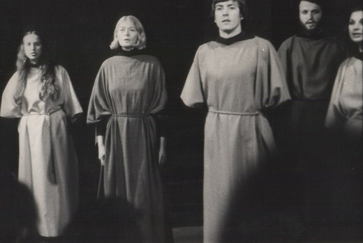
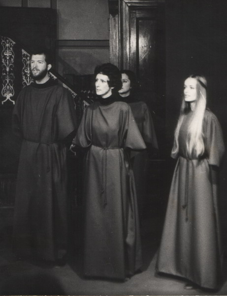
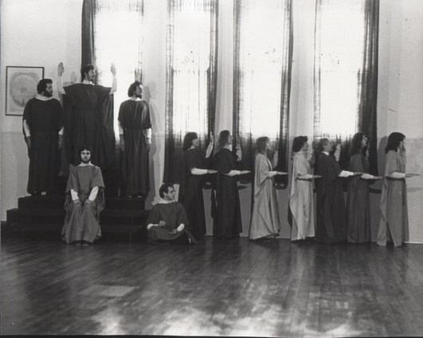
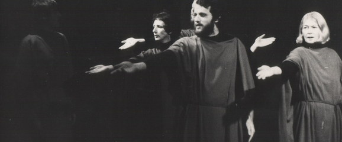
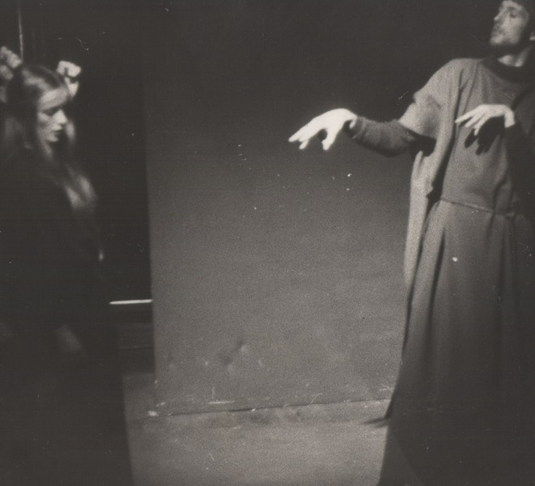
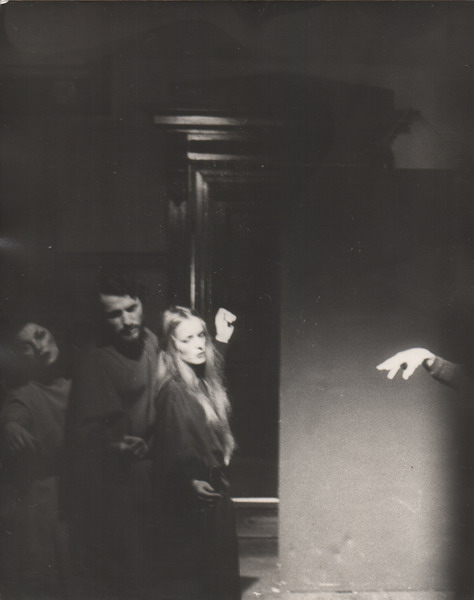
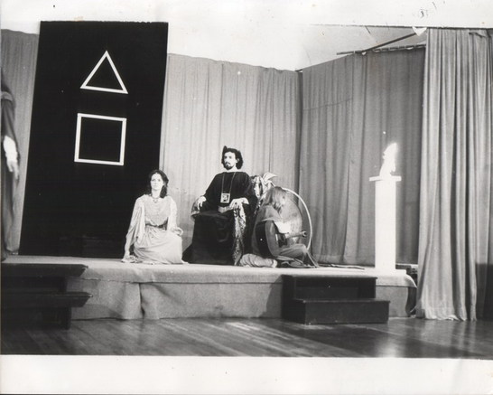
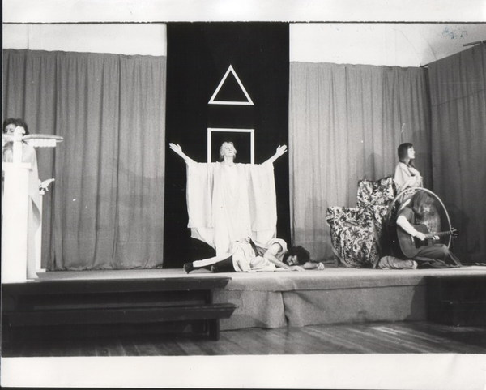

Productions: 1976 -
Man the Measure of all Things
This production involved a great deal of chorus work and incorporated a number of texts from Sophocles to T.S. Eliot. A selection of these appear (in random order) below…
Ode
from Sophocles’ Antigone
Numberless are the world’s wonders, but none
More wonderful than man: the stormgrey sea
Yields to his prows, the huge crests bear him high;
Earth, holy and inexhaustible, is graven
With shining furrows where his ploughs have gone
Year after year, the timeless labour of stallions.
The lightboned birds and beasts that cling to cover,
The lithe fish lighting their reaches of dim water,
All are taken, tamed in the net of his mind;
The lion on the hill, the wild horse windy-maned,
Resign to him, and his blunt yoke has broken
The sultry shoulders of the mountain bull.
Words also, and thought as rapid as air,
He fashions to his good use; statecraft is his,
And his the skill that deflects the arrows of snow,
The spears of winter rain: from every wind
He has made himself secure — from all but one:
In the late wind of death he cannot stand.
O clear intelligence, oh force beyond all measure,
O fate of man, working both good and evil!
When the laws are kept, how proudly his city stands!
When the laws are broken, what of his city then?


Echoing silence
Darkness lit up by beams
Light
Seeking its counterpart
In melody
Stillness
Striving for liberation
In a word
Life
In dust
In shadow
How seldom growth and blossom
How seldom fruit.— from Markings, Dag Hammarskjold
Akhenaton’s Hymn to the Sun

Thy dawning is beautiful in the horizon of the sky,
O living Aten, beginning of life!
When thou risest in the eastern horizon,
thou fillest every land with thy beauty…

Man’s thoughts reach out into the origins.
What as shadow he has thought,
what as phantom he has lived
emerges from the moulded world
of whose abundance
men, when thinking
dream in shadows,
of whose abundance
men, when seeing
live in phantoms.— from The Portal of Initiation, R.S.


Give me a pure heart — that I may see Thee,
A humble heart — that I may hear Thee,
A heart of love — that I may serve Thee,
A heart of faith — that I may abide in Thee.— from Markings, Dag Hammarskjold
The Temple Legend
Written by Douglas Waugh this production, melding movement, drama and music, was inspired by the creation of the Temple of Solomon. The music was composed and played by Markus Harkness.

